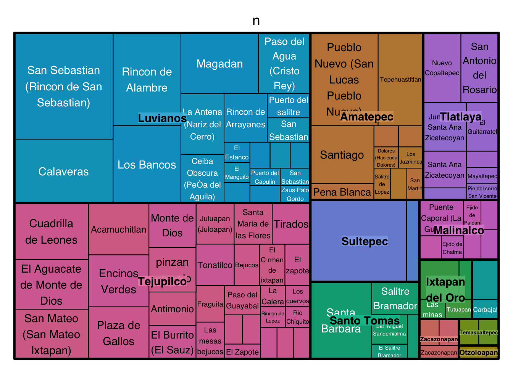
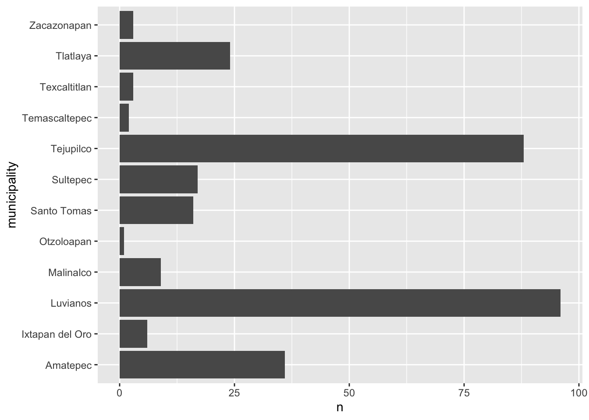
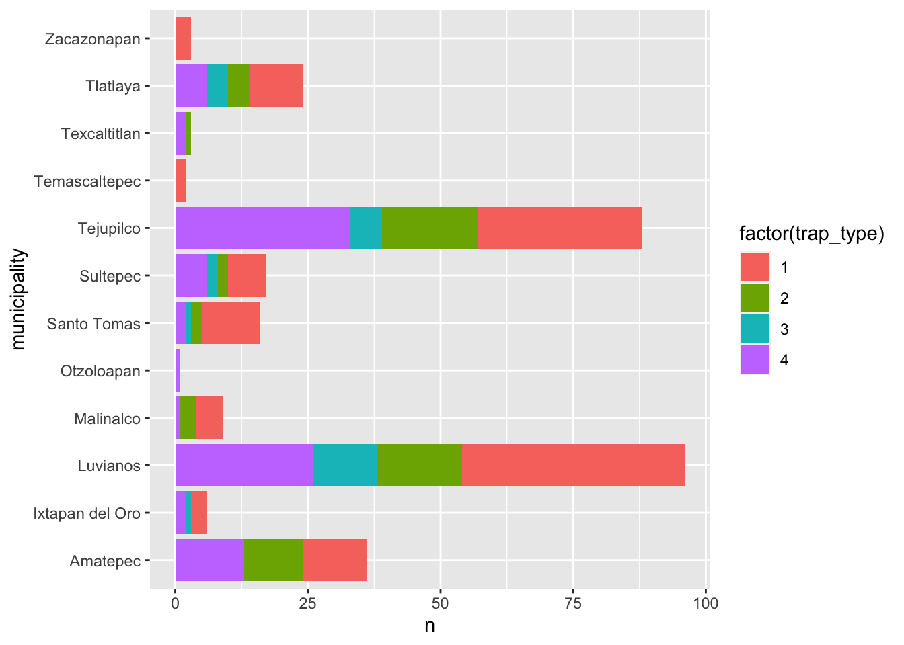
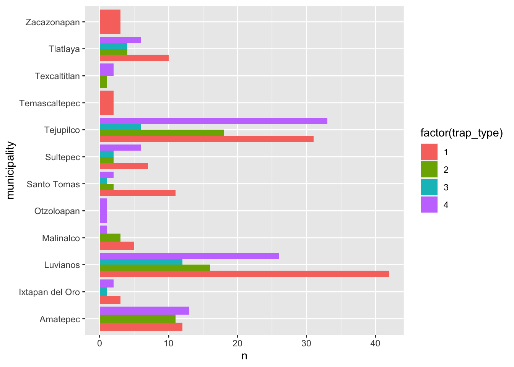

Introduction to data visualization with ggplot2
Pablo Gomez
2023-07-05
Cambiar a español  | Mudar para Português
| Mudar para Português 
# Load the libraries
library(ggplot2) # for graphics
library(dplyr) # For data manipulation
library(STNet) # Library with the data
# loading the data from the package
data('captures') # we load the data
head(captures) # let's have a look at the data## municipality location Loc date year captures
## 1 Temascaltepec San Pedro Tenayac Cueva el Uno 11/06/14 2014 6
## 2 Tlatlaya Nuevo Copaltepec La alcantarilla 12/05/05 2005 3
## 3 Tlatlaya Nuevo Copaltepec La alcantarilla 12/05/07 2007 30
## 4 Tlatlaya Nuevo Copaltepec La alcantarilla 12/03/09 2009 0
## 5 Tlatlaya Nuevo Copaltepec La alcantarilla 10/08/10 2010 4
## 6 Tlatlaya Nuevo Copaltepec La alcantarilla 16/05/11 2011 4
## treated lat lon trap_type
## 1 6 18.03546 -100.2095 1
## 2 2 18.40417 -100.2688 1
## 3 29 18.40417 -100.2688 4
## 4 0 18.40417 -100.2688 3
## 5 3 18.40417 -100.2688 1
## 6 3 18.40417 -100.2688 21 Plots in R
By default R already has a set of functions to create a variety of
figures, but the code can get quite complex and difficult to read as we
produce more detailed figures. ggplot2 is a library that
provides a set of functions for producing a variety of figures.
The function ggplot() has to be called at the beginning
of the plot definition, this function sets a blank canvas for our plot.
If we call the function with no arguments we will just see the empty
canvas, for example:
ggplot()
Then we can add layers to our canvas based on the data we want to
visualize, similarly to the pipes, we will connect the different layers
of our plot with the operator +.
The basic components that we need to define for a plot are the following:
- data, the data set we will use to generate the figure
- geometry, or type of graphic we will generate (i.e. histogram, bar, scatter, etc..)
- aesthetic, variables or arguments that will be used for the figure for example: location, color, size, etc..
An example:
ggplot(data = captures) + # This is the data we will use
geom_histogram( # This is the geometry
aes(x = treated) # The aesthetic includes only one variable representing the x axis
)
Other components of the plots can be defined to further customize our
figures, and we will cover those more in detail in future
sections.
As you noticed in the previous example, we can print the figures
directly from the R console, but a way I like to organize the figures is
to put them all inside a single object in R. This object can be a
list, which is just a container for other objects.
# To create an empty list we can use the function list()
figures <- list()2 Visualizing distributions
2.1 Continous variables
2.1.1 Histograms
The most simple way to visualize the distribution of a continuous variable is using a histogram. Histograms are a special kind of bar plots where our variable is grouped in bins and showing the counts for each bin. Now that we have our container list for the plots, we can simply save it there and assign a name we want.
Notice that we will combine the pipes with the ggplot syntax. you can either define the name of the data in the ggplot function or before the function and connect it with a pipe.
figures$histogram <- captures %>% # This is the data we use.
ggplot() + # we set the empty canvas
geom_histogram(aes(x = treated)) # add a layer to visualize a histogram
# we can see our plot by calling the name in our container list
figures$histogram
2.1.2 Boxplots
Box plots are great to show the distribution of a continuous variable. We can use it to show only one variable, or multiple variables. It is important to be very descriptive when making plots, the idea of a figure is that can explain itself. we will start to slowly introduce functions to do this and customize our figures.
# Only one variable
figures$box <- captures %>%
ggplot() +
geom_boxplot(aes(y = treated))
figures$box
2.2 Categorical variables
2.3 Pie charts… ?
Pie charts are not very straight forward in ggplot, there is NO
geom_pie functions. To do this, you can essentially do a bar chart with
some specifications and then use the function coord_polar()
which will convert the coordinates from the figure.
captures %>% count(municipality) %>%
ggplot() +
geom_bar(aes(x = 'municipality', y = n, fill = municipality), stat = 'identity') +
coord_polar('y') +
theme_void()
You might be wondering why there is no geom_pie in ggplot … Despite pie charts being one of the most common figures in media for categorical data, pie charts have been criticized as difficult to interpret when looking a distributions, particularly when the distribution of the variable is closely homogeneous. You can evaluate that yourself in the following figure:

{kind=link}
Some alternatives to pie charts include: mosaic and bars charts.
2.4 Mosaic
The main drawback of mosaic plots is that there is not a specific
function from the ggplot2 library to make this plot, which
means that does not integrates as well with some of the functions we
will be using in this workshop. We can use another library
(treemap) to generate this figure. We use the function
treemap() from the same library:
library(treemap) # load the library
captures %>% # this is our data
count(municipality, captures) %>% # we count the number of captures
treemap(
., # This is our data
index = 'municipality', # The index variable
vSize = 'n' # Variable that indicates the frequency per category
)
Treemaps (or mosaic) can include multiple hierarchies
captures %>%
count(municipality, location, captures) %>%
treemap(., index = c('municipality', 'location'), vSize = 'n')
2.5 Barplots
Bar plots are great to represent frequencies of categories. In the following example we will first count the number of treated by year, and then see it in a bar plot.
figures$bars <- captures %>%
count(municipality) %>%
ggplot() +
geom_bar(aes(
x = n, # X axis
y = municipality # Y axis
), stat = 'identity') # type of barplot
figures$bars
We can add extra variables to indicate the composition (using another
variable) of each of the levels in our figures. For example, we will add
the variable trap_type to color the bars in this figure. To do
this we add the argument fill=factor(trap_type) to our
aes() function
figures$bars <- captures %>%
count(municipality, trap_type) %>%
ggplot() +
geom_bar(aes(
y = municipality, # X axis
x = n, # Y axis
fill = factor(trap_type) # Variable used for fill
), stat = 'identity') # type of bar plot
figures$bars
There are different strategies to visualize this, another example would be to breakdown the composition in individual bars like in the following figure, this can be useful to compare the within group composition:
captures %>%
count(municipality, trap_type) %>%
ggplot() +
geom_bar(aes(
y = municipality, # X axis
x = n, # Y axis
fill = factor(trap_type)
), stat = 'identity', position = 'dodge') # type of bar plot
Another option is looking the composition as a proportion by adding
the argument position = 'fill to the
geom_bar() function, notice that this removes the sense of
number of observations for the main category (year):
captures %>%
count(municipality, trap_type) %>%
ggplot() +
geom_bar(aes(
y = municipality, # X axis
x = n, # Y axis
fill = factor(trap_type)
), stat = 'identity',
position = 'fill') # type of bar plot
3 Visualizing relationships
3.1 Scatterplots
This is one of the most popular kind of plots, it is useful to represent relationship between two continuous variables.
figures$scatter <- captures %>% # first we start with the name of our data.frame
ggplot() + # then we set the canvas
geom_point(aes(x = treated, y = captures)) # and we add layer for points
figures$scatter
3.2 Heatmaps
Heatmaps represent the frequency (or other values) for a combination of variables in a matrix. For example, we can visualize the frequency of captures by trap type for each of the municipalities in our data:
figures$heatmap <- captures %>% # The data we are using
count(municipality, trap_type) %>% # We count the data by municipality and trap type
ggplot() +
geom_tile(aes(
y = municipality, # y axis
x = factor(trap_type), # x axis
fill = n # The fill for each cell
))
figures$heatmap3.3 Boxplots (again..)
# Only one variable
figures$box <- captures %>%
ggplot() +
geom_boxplot(aes(x = treated, y = municipality))
figures$box4 Time series
To create a time series we will need to reformat the data a little
bit so R can do what we want. We will introduce a new kind of variable:
date. The date variables are pretty much what it sounds
like, is a variable that has a format with year, month and day; there
are other ways to format dates in R, but this is the most common and
straight forward.
tCaptures <- captures %>%
mutate(date = as.Date(date, "%d/%m/%y"), # First we will format the date
month = lubridate::floor_date(date, 'month')) %>% # The we create a variable formatting the date as month of the year
count(month) # Count the number of observations by monthNow that we have our variables in the correct format, we can use it as any other variable.
figures$timeseries <- tCaptures %>%
ggplot() +
geom_line(aes(x = month, y = n))
figures$timeseries